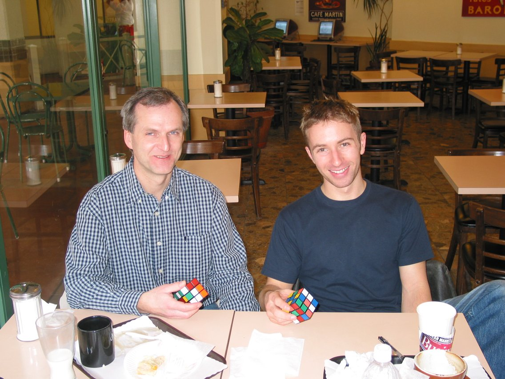
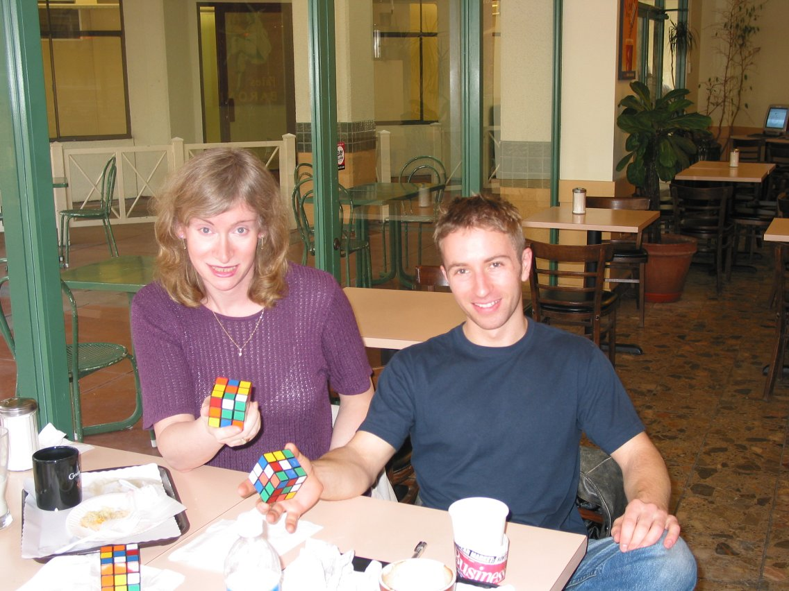
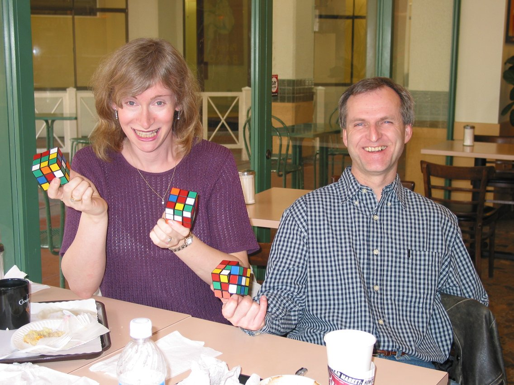

January 19, 2003, San Francisco, California. Dan Knights' cubing style is textbook-like: slow but STEADY F2L and fast LL. No delays, perfect "seeing", excellent cube. When I was watching him doing the F2L, I remember telling myself - wow, this is so smooth and slow, but then I glanced at my watch to clock his F2L at about 11 seconds and the whole cube at 17. And this is the whole secret of getting sub-20. Dan is working on his left-handed twisting to be able to do finger shortcuts with both hands and it does look cool. He is one of the most talented speedcubers I have ever met. In my opinion, he has the potential to average 16 seconds.


